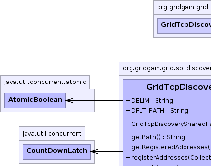
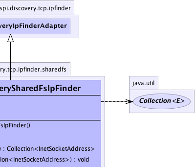
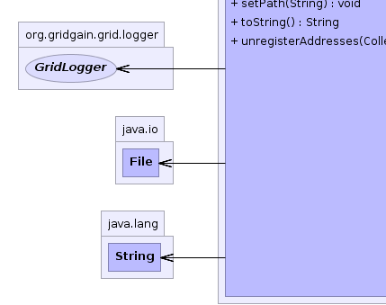
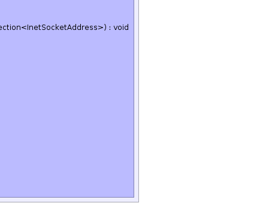

org.gridgain.grid.spi.discovery.tcp.ipfinder.GridTcpDiscoveryIpFinderAdapter
org.gridgain.grid.spi.discovery.tcp.ipfinder.sharedfs.GridTcpDiscoverySharedFsIpFinder
org.gridgain.grid.spi.discovery.tcp.ipfinder.GridTcpDiscoveryIpFinderAdapter
org.gridgain.grid.spi.discovery.tcp.ipfinder.sharedfs.GridTcpDiscoverySharedFsIpFinder
|
GridGain™ 4.0.1c
Community Edition |
|||||||||
| PREV CLASS NEXT CLASS | FRAMES NO FRAMES | |||||||||
| SUMMARY: NESTED | FIELD | CONSTR | METHOD | DETAIL: FIELD | CONSTR | METHOD | |||||||||
java.lang.Object
public class GridTcpDiscoverySharedFsIpFinder
Shared filesystem-based IP finder.
GridTcpDiscoverySharedFsIpFinder.setPath(String))GridTcpDiscoveryIpFinderAdapter.setShared(boolean))
If GridTcpDiscoverySharedFsIpFinder.getPath() is not provided, then GridTcpDiscoverySharedFsIpFinder.DFLT_PATH will be used and
only local nodes will discover each other. To enable discovery over network
you must provide a path to a shared directory explicitly.
The directory will contain empty files named like the following 192.168.1.136#1001.
Note that this finder is shared by default (see GridTcpDiscoveryIpFinder.isShared().
| Wiki | |
| Forum |
|  |  |
|  |  |
| Field Summary | |
|---|---|
static String |
DELIM
Delimiter to use between address and port tokens in file names. |
static String |
DFLT_PATH
Default path for local testing only. |
| Constructor Summary | |
|---|---|
GridTcpDiscoverySharedFsIpFinder()
Constructor. |
|
| Method Summary | |
|---|---|
String |
getPath()
Gets path. |
Collection<InetSocketAddress> |
getRegisteredAddresses()
Gets all addresses registered in this finder. |
void |
registerAddresses(Collection<InetSocketAddress> addrs)
Registers new addresses. |
void |
setPath(String path)
Sets path. |
String |
toString()
|
void |
unregisterAddresses(Collection<InetSocketAddress> addrs)
Unregisters provided addresses. |
| Methods inherited from class org.gridgain.grid.spi.discovery.tcp.ipfinder.GridTcpDiscoveryIpFinderAdapter |
|---|
isShared, setShared |
| Methods inherited from class java.lang.Object |
|---|
clone, equals, finalize, getClass, hashCode, notify, notifyAll, wait, wait, wait |
| Field Detail |
|---|
public static final String DFLT_PATH
public static final String DELIM
| Constructor Detail |
|---|
public GridTcpDiscoverySharedFsIpFinder()
| Method Detail |
|---|
public String getPath()
@GridSpiConfiguration(optional=true) public void setPath(String path)
path - Shared path.public Collection<InetSocketAddress> getRegisteredAddresses() throws GridSpiException
GridSpiException - In case of error.
null.public void registerAddresses(Collection<InetSocketAddress> addrs) throws GridSpiException
Implementation should accept duplicates quietly, but should not register address if it is already registered.
GridSpiException - In case of error.addrs - Addresses to register. Not null and not empty.public void unregisterAddresses(Collection<InetSocketAddress> addrs) throws GridSpiException
Implementation should accept addresses that are currently not registered quietly (just no-op).
GridSpiException - In case of error.addrs - Addresses to unregister. Not null and not empty.public String toString()
toString in class GridTcpDiscoveryIpFinderAdapter
|
GridGain™ 4.0.1c
Community Edition |
|||||||||
| PREV CLASS NEXT CLASS | FRAMES NO FRAMES | |||||||||
| SUMMARY: NESTED | FIELD | CONSTR | METHOD | DETAIL: FIELD | CONSTR | METHOD | |||||||||
|
GridGain - Real Time Big Data
|
|

|
|